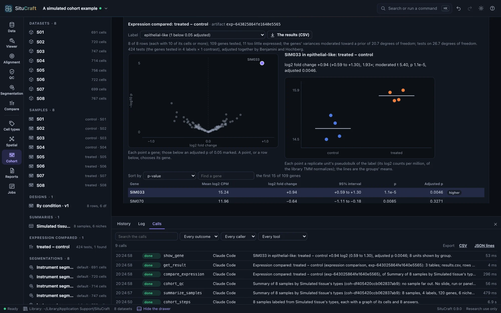
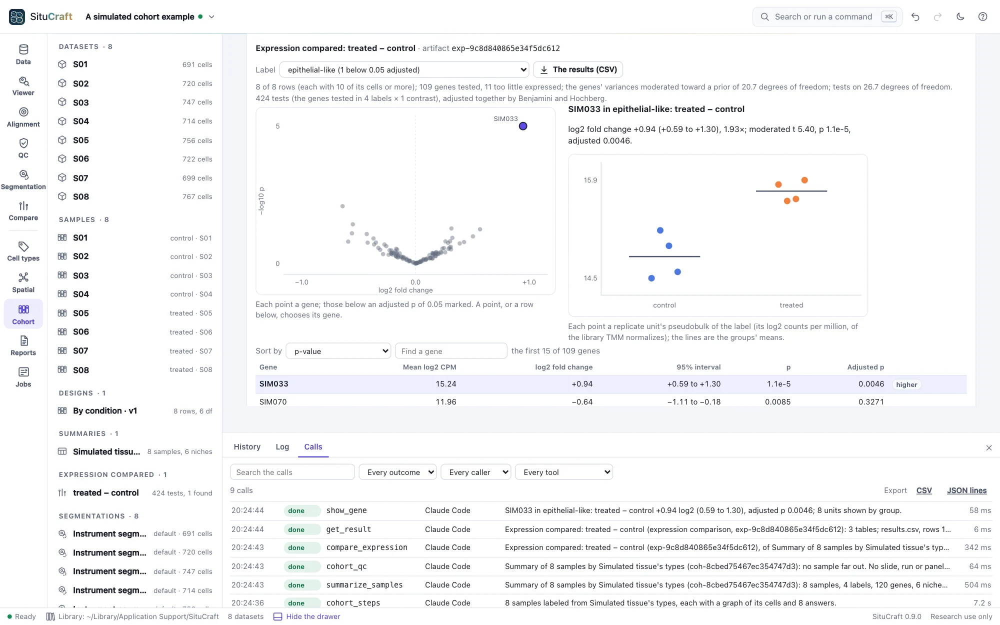

Agents and scripts
An AI agent such as Claude Code can ask SituCraft about your projects and results, show you the tissue and, given leave, run the analyses, through situcraft mcp, a Model Context Protocol server. It works in a SituCraft window you see, every change it makes carries its name, and every call is logged. Scripts in Python and R call the same actions, and a recipe makes any result again without a window.
Setting it up
Give your agent's client the full path to SituCraft and the argument mcp. For Claude Code, for all your projects:
$ claude mcp add situcraft --scope user -- ~/.local/bin/situcraft mcpFor Claude Desktop, under mcpServers in claude_desktop_config.json (Settings, Developer, Edit Config):
{
"mcpServers": {
"situcraft": { "command": "/Users/you/.local/bin/situcraft", "args": ["mcp"] }
}
}Cursor, Gemini CLI, VS Code and Codex take the same command and arguments; the MCP reference shows each one's file, and how to check the connection without a client.
What an agent may do
By default an agent may only read and show: describe the project, list what was made, read results and their records, ask which cells meet conditions, write the methods, and show things in the window. You give it more when you start the server:
| Leave | What it adds |
|---|---|
--allow edits | Changing the project: regions, saved views and filters, cluster names, curated labels and reviews, decisions, samples and designs, figures |
--allow compute | Running jobs: segmentations, clusterings, labels, graphs, spatial analyses, cohort summaries and comparisons, opening examples; stopping or resuming jobs |
--allow files | This computer's files by path: opening bundles, reading tables, references and images, writing exports; downloading an example |
Give several at once, --allow edits,compute, or --allow all. In Claude Code, the flags go after mcp: claude mcp add situcraft --scope user -- ~/.local/bin/situcraft mcp --allow edits,compute. The agent's client offers only the tools it may use, and SituCraft refuses a call that needs more leave than you gave, saying which.
Your window, or one of its own
When SituCraft is already running with your library and remote control on, the agent works in its window, where you are working. Otherwise situcraft mcp starts a SituCraft of its own with your library, opens its window when a tool first needs it, and stops it when the agent's session ends; jobs it did not finish can be resumed in the Jobs view.
The History drawer (⌘J) names the agent with each change it made, and Undo takes any of them back. Its Calls tab lists every call the agent makes, as it makes them.
A session on the simulated tissue
What working with an agent looks like, on the simulated tissue any computer can make: 500 µm square, four cell types in domains of their own. Each tool call below is real: validation/agent-session.mjs makes them through situcraft mcp in CI and checks every number the answers quote. The answers were written by Claude from those results; another agent's wording will differ, its numbers not.
YouOpen the simulated tissue. Label its cells by type, and tell me which types sit next to each other more, or less, often than chance would have them.
open_example{"example": "simulated"}get_statecluster_cells{}label_cells{"markers": "simulated"}build_graph{}spatial_analysis{"question": "enrichment", "labels": "lab-…"}get_result{"id": "spa-…", "limit": 0}, every pair
The tissue holds 2,925 cells. Clustered, they fall into 5 clusters, and labeled from the simulated panel's own marker set 2,887 take a type: 621 epithelial-like, 636 fibroblast-like, 996 immune-like and 634 endothelial-like (38 are left unlabeled).
Over the graph of their neighbors, each type is next to its own kind more often than if the labels were dealt at random: epithelial-like cells 2.27 times as often, endothelial-like 2.18, fibroblast-like 1.61 and immune-like 1.34, as cells in domains of their own would be. Of two types, four pairs meet less often than at random, endothelial-like and epithelial-like least (0.26 times, z −26.0), then epithelial-like and immune-like (0.49), endothelial-like and fibroblast-like (0.41) and fibroblast-like and immune-like (0.77); two meet more often, epithelial-like with fibroblast-like (1.38 times, z 12.8) and endothelial-like with immune-like (1.12, z 5.4). Every one of these is below an adjusted p of 0.05.
YouDo any immune-like cells carry epithelial transcripts? Count those with two or more of an epithelial marker, and keep them as a filter.
query_cells{"where": {"all": [{"labels": "lab-…", "in": ["immune-like"]}, {"any": [{"gene": "SIM001", "min": 2}, {"gene": "SIM002", "min": 2}, {"gene": "SIM003", "min": 2}]}]}, "columns": ["transcripts", "SIM001"], "limit": 5}save_filter{"name": "Immune-like with epithelial transcripts", "where": …}, the same tree
256 of the 996 immune-like cells hold two or more transcripts of SIM001, SIM002 or SIM003, the first three of the epithelial-like type's markers. I kept them as the filter "Immune-like with epithelial transcripts" (256 cells): the QC view shows them, and a clustering or a graph can leave them out.
YouWrite the enrichment's recipe, so that I can make it again on our cluster.
recipe{"id": "spa-…"}, written toenrichment.recipe.json
enrichment.recipe.json holds the enrichment's 5 steps from the bundle: the instrument's segmentation, the graph, the clustering, the labels from the marker set and the enrichment, each with its parameters. The bundle is named by its role, and nothing of this computer's paths is in it.
A recipe, made again
The recipe makes the same result anywhere SituCraft runs, without a window. On the cluster, or here:
$ situcraft run --recipe enrichment.recipe.json --bundle /data/simulated-standard --out /results/simulated
$ situcraft verify /results/simulated/certificate.zipMade again on the same bundle, the enrichment has the same id as the agent's, its files the same bits, and the run's certificate is verified; the agent session checks both. On other bundles, a recipe makes each in a folder of its own, or one as an array job's task (Running at scale).
A session on the simulated cohort
The simulated cohort: eight sections of eight subjects, four control and four treated, on two slides. In the treated subjects the simulator raised one gene in one cell type; SituCraft is not told which.
YouOpen the simulated cohort. Does the treatment change any gene's expression in any cell type?
open_example{"example": "cohort"}samplesdesign{"unit": "subject", "group": "condition", "reference": "control", "save": "By condition"}cohort_steps{"markers": "simulated"}summarize_samples{}cohort_qc{}compare_expression{"design": "By condition"}get_result{"id": "exp-…", "limit": 0}, every testshow_gene{"gene": "SIM033", "label": "epithelial-like"}
With the subject as the replicate, the design compares four treated subjects with four controls, 6 degrees of freedom left for the variation between them. Every sample went through the same steps (its cells clustered and labeled from the simulated marker set, a graph and its enrichment), and their summary's quality control finds no sample far out.
Comparing each label's pseudobulk between the conditions, 424 tests in 4 labels, one gene changes: SIM033 in the epithelial-like cells, up 0.94 log2 in the treated subjects (0.59 to 1.30; adjusted p 0.0046). No other gene in any label comes below an adjusted p of 0.05. The Cohort view shows SIM033's subjects by group.


What to ask
- "What is open in SituCraft, and is each bundle healthy?"
- "List the Lung dataset's segmentations and say how each was made."
- "Show the tissue around the tumor nest region with CD3E and EPCAM."
- "How many T cells lie within 50 µm of the tumor nest, and which genes stand out inside it?"
- "Which labels are enriched near each other, and is the answer the same on the refined segmentation?" (with
--allow compute) - "Write the methods for the whole project, with their references."
An agent can read your library without opening anything: list_projects, describe_project (a project's datasets and every result, with what each was made from) and get_result (a result's record and its numbers as tables: an enrichment's pairs, Moran's I by gene, a comparison's tests). It asks which cells and transcripts meet conditions with query_cells and query_transcripts, and what a region holds with summarize_region: the conditions are a tree of JSON (all, any and not of a cell's QC numbers, genes, labels, clusters, niches, regions and distances from them), checked and evaluated by SituCraft, never a query string or a command. With --allow edits, save_filter keeps the same cells as a filter your analyses can use. Asked with picture, show_tissue, show_map and figure also give it a picture of what they show, so it sees what you see. Each answer says what it changed in the project.
The tools are SituCraft's remote-control actions, under the same names; the MCP reference lists them by the leave each needs. SituCraft's results are research findings about a tissue, never a diagnosis, and its instructions to the agent say so.
From Python and R
The situcraft packages for Python and R make each action a function, with its arguments and help, generated from the same list of actions: tables come back as data frames, pictures as files, and an action SituCraft refuses as an error carrying its reason. A script drives the window of a SituCraft started with --remote-control, found through its remote.json (Python and R).
Two worked examples come with them, and CI runs both against a build of SituCraft: a Python notebook on the simulated tissue (simulated-tissue.ipynb: its labels against the true types, 97% agreeing, as a confusion matrix; which labels neighbor each other, as a heatmap; the tissue as a picture; the enrichment's recipe) and an R script on the simulated cohort (simulated-cohort.R: the session above from R, the 424 tests as a data frame, SIM033 found alone, a volcano and the methods).
The log of calls
Every call an agent or a script makes is a line of your library's log, refusals and failures too: when, who called and how (an agent with its leave, or a script), the tool and its arguments, whether it was done, refused or failed, what it changed in the project, the ids it answered with and how long it took. The drawer's Calls tab (⌘J) shows the log as calls arrive, searches it and exports it as CSV or JSON lines; scripts read it at /api/calls. It never leaves this computer.
How well agents do
The agent benchmark gives agents tasks whose answers are known, on simulated tissues and cohorts and on the Lung bundle, worded as you would ask them, and grades by code what they answer and what they leave in the project.
Privacy and security
- Everything runs on this computer, and your data never leave it; the only outbound requests are example downloads, which need
--allow files. - The leave is checked by SituCraft, not left to the agent.
- While an agent drives a SituCraft that
situcraft mcpstarted, that SituCraft takes no actions from scripts. - An agent's changes go into the project's history under its name, and undo as anyone's.